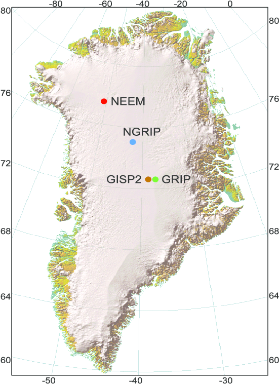
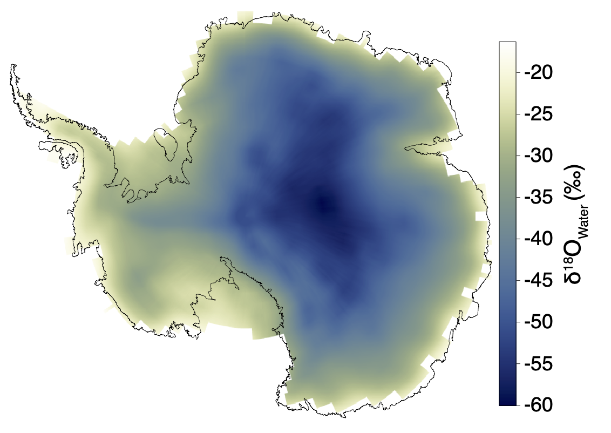

Climate History II: The Quaternary
Week
GEOS 3410
🪑
Week Schedule
Tuesday
- Pleistocene glacial-interaglacials
- Ice core records
Thursday
- Millenial scale variability
- Ice sheets, oceans, teleconnections
Outside of class
- Readings: Syllabus / Canvas
- Lab 9 (isotopes & paleoclimate) due Friday
- Climate zine due next Tuesday
The Quaternary Period
2.58 Ma to present
The Quaternary Period
| Pleistocene epoch | 2580 – 11.7 ka |
|---|---|
| Holocene epoch | 11.7 ka – present |
The Quaternary Period
What are cyclic (repeating) and secular (long-term) changes?

Data: Lisiecki+Raymo 2004
Zooming out over the Plio-Pleistocene

As temperatures cool and ice sheets grow progressively larger (on average)… climate change amplitudes increased over Quaternary.


↑ You do not need to know this ↑


"Internal" ice sheet forcing
"External" climate forcing
 (You don't need to know diagram)
(You don't need to know diagram)


Why?
Data: Lisiecki+Raymo 2004
Orbital cycles
Obliquity
41 kyr period
Axial Precession
∼26 kyr period
Eccentricity
∼100 kyr period
Solar forcing at 65°N on the summer solstice
Can orbital cycles account for increasing amplitude of climate change?
No secular change. So what is changing? Climate sensitivity via ↓ CO2
Glacial-interglacial pacing
Data: Lisiecki+Raymo 2004
- Measure the distance between adjacent extrema (peak-peak, trough-trough)…
- Before 1500 ka
- After 500 ka
- Use the x-axis ticks to convert your measurements to time.
- Interpret your results. What is going on?
Mid-Pleistocene Transition
Between 1200 and 700 ka shift from ∼41 kyr cycle to ∼100 kyr cycle
| Glacial/Interglacial Period | Climate system sensitive to… |
|---|---|
| ∼41 kyr | Obliquity |
| ∼100 kyr | Eccentricity OR 4× Precession |
Internal climate system forcings maintain glacial conditions through several cycles until it hits a tipping point (threshold)
Climate records in ice
Antarctic ice core sites
Since 1950s…
↑ You do not need to know the sites ↑
Greenland ice core sites

| NEEM | North Greenland Eemian Ice Drilling | 2009 |
|---|---|---|
| NGRIP | North Greenland Ice Core Project | 1999 |
| GRIP | Greenland Ice Core Project | 1990 |
| GISP(2) | Greenland Ice Sheet Project | 1971 |
Annual layers
Light (↓) and dark layers. What do they represent?Seasons: summer snowflakes are coarser than winter snowflakes…
← 19 cm long →
Annual layers
A person examining layers from individual storm events in a snow pit.
Why are annual layers in the snow/firn thicker than in the underlying ice?
Ice chronology

Mt. Erebus (Smithsonian)
Oxygen isotopes in water ice
Light isotopes travel further inland.
Preferentialy condense/freeze heavy isotopes → snow
Dr. Gavin Piccione (data from Werner+ 2018)
Oxygen & hydrogen isotopes in water ice
What determines where we fall on our (local) meteoric water line?
Atmospheric gas stored in bubbles
Gas ages vs. water (ice) ages
What do you think?
Snow → Firn → Ice
Gas diffuses ↑/↓ through firn column, mixes with atmosphere.
Gas ages ≈ water (ice) ages
(within uncertainty)
- Historical thought— gas 102–103 y younger than ice.
- Better firn compaction models → gas mostly stays put.

Climate change of the last glacial period
Millenial-scale climate change over Greenland
What's going on here?
Dansgaard-Oeschger (DO) Events
Warm interstadials and cool stadials every few kyr
North Atlantic sediment cores
Ice-rafted debris (IRD) in North Atlantic sediment cores
“IRD belt”

Ice-rafted debris
… carried far out into the deep ocean by a large iceberg → ice shelf origins


Heinrich Events
Pulses of IRD (i.e. icebergs) during some (but not all) stadials
Core EW9302-2JPC
Heinrich events
Few icebergs
Coarse, "lithic" sediment deposited beneath ice shelf.Many icebergs
Carry IRD into deep ocean. Each layer corresponds to a calving event.IRD ← icebergs ← ice shelves ← ice streams
Ice streams of the Laurentide Ice Sheet (LIS)
Ice streams of the Laurentide Ice Sheet (LIS)
Sites of major ice streams are deep bays and lakes today (an interglacial)
Ice streams of the Laurentide Ice Sheet (LIS)
Hudson Strait Ice Stream
- Largest ice stream of LIS
- Located in Labrador Sea → North Atlantic
- Overlays carbonate rock & carbonate IRD most common in Heinrich event layers
Heinrich events through ice stream activation?
Requires:
- Intermittent ice stream activation/acceleration
- Dormant for 5–7 kyr
How can we speed up ice flow?
Cyclically activating an ice stream
Option 1: enlarge/expel
"Internal" ice sheet forcing
Option 2: subsurface ocean warmth
"External" climate forcing
Overall consensus: climate forcing (#2)
(You don't need to know diagram)
- The variability in Heinrich event timing (5–7+ kyr) supports an "external" influence
- Other maritime ice streams also accelerate during HEs
- BUT, ice requires time to thicken → sensitive to climate.
Dansgaard-Oeschger events & Heinrich events:
Ice sheet–ocean interactions
But first…
Another feedback (meltwater, sea ice, &SST)
The DO-HE Process
DO interstadial
DO stadial
Heinrich stadial
Heinrich stadial → interstadial
Escape from the North Atlantic!
Antarctic Isotope Maxima (AIMs)
NGRIP = Greenland | WDC = West Antarctica | ATS= Antarctic Temp.
Antarctic ice δ18O rises during stadials, when Greenland δ18O is low.
Ice sheets across hemispheres
Zoom in on the timing.
Ice sheets across hemispheres
N & S nearly in-phase
Greenland always warms/cools ∼200 years before Antarctica.
An interhemispheric change…
…with a ∼200-year lag.
🤔
Polar See-saw
Brought to you by Thermohaline Circulation
Wikipedia: Thermohaline circulation
Stadials
- cooler/cooling N. Atlantic
- more meltwater/sea ice
- weaker Gulf stream
- warmer/warming S. Ocean
Hulu Cave, China
Speleothems — stalagmites, stalactites
Rainwater-fed cave, CaCO3 in drip waters…
Where does that O come from???
Hulu cave speleothems
Changes in East Asian Monsoon
GISP2 = Greenland ice sheet
Siku Events — IRD in North Pacfic
Siku Events — IRD in North Pacfic
| H# | Heinrich events |
|---|---|
| S# | Siku events |
| ··· | Radiocarbon age of N Pacific water |
What is going on here?
Putting it all together
WHAT IS GOING ON HERE?
Lab this afternoon in MMS 273
Bring a computer/tablet
Next Week ()
- Readings: Syllabus / Canvas
- Deglaciation → Holocene
- Lab 9 (isotopes) due tomorrow
- Climate zine due Tuesday